Contents:
2.2 One Parametric Approximations
2.2.1 Defining
the Approximated Function and Training Data
2.2.2 Training
the Neural Network
2.3 Functions of 2 Variables with 3D Surface Plots
2.3.1 Defining
the Approximated Function and Training Data
2.3.2 Network
Architecture and Training Parameters
2.3.3 Showing
Training Data and Results
2.4 Accessing Help and Web Pages
NeurApp is an educational software intended for exploring how neural network-based approximations work on functions of one or two variables. You can input different functions to be approximated by an artificial neural network (ANN), generate training points that are used to build the approximation, set parameters of training procedure, train the neural network on the generated data, and compare the obtained model (i. e., the approximation obtained by the trained neural network) to the original function that was used for generation of training data.
User interface is intuitive and you can start using the program without reading this manual and without prior knowledge about artificial neural networks. Initial values of various parameters are chosen in such a way that meaningful results should be obtained by these initial values. After some clicks on action buttons, when you figure out how the software works, you can change training parameters to see how approximations can be improved with optimal settings, try which is the minimum quantity of data (number of sampling points) necessary to obtain a meaningful approximation, experiment with more complex model functions and explore graphically which are the details that are more difficult to approximate.
The purpose of this software is manifold. The software is primarily designed to build and improve intuitive understanding of approximative models - how they work, what is their purpose and what are their limitations. You can explore how the underlying mathematical concept works "in vivo", without necessarily knowing much about mathematics behind. This can be a wonderful introduction before learning about mathematics of approximation, it can add intuitive component when you already know something about mathematics behind, or you can just play with these approximate models out pure curiosity. The software might be interesting to high school students just as well as to professionals who more use approximative modeling in science or engineering and other business contexts.
We initially created the software for ourselves, to quickly test new algorithms and visually identify their weak points. Then we learned how often people have different misconceptions about approximation techniques, even when they work in environment where application of these techniques would be beneficial, or they actually use them through some black box-like software. We realized that software like NeurApp can help improve understanding of approximations in more intuitive ways. Humans are visual beings and being able to visually compare graphs of the original functions and their approximations together with data used to build approximations, to zoom and rotate in order to easily notice and focus on individual details, and to do this within an interactive loop where approximated functions, quantity of input data and algorithm parameters can be varied and results of these changes visualized immediately, these possibilities can improve core understanding of approximative modeling easier than long hours of theoretical lectures. Lessons learned with such hands-on approach are more vivid and better remembered.
Reshaping software for educative purposes led to some simplifications. Instead of a number of algorithms that could be switched between, we enabled only one in order to keep the user focused. This software does not address some of the most wide spread (and dangerous) misconceptions about approximative models, which are related to effects of dimensionality. Some intuitive understanding can be built up by comparing 1D and 2D models and models of increasing complexity (e.g. by increasing modality - the number of minima and maxima - of the approximated function). However, drastic increase of complexity in higher dimensions can not be embraced in this way and its understanding can not be acquired without more rigorous mathematical treatment. Supporting facilities for learning about these effect through experimentation and visualization are provided by other software such as NeuralShell and AnnApp.
Installing and using the software is extremely simple. In order to install the software, just grab the archive, expand it, and copy the contained file into some directory. Double-click on the executable file in any file browser (such as the Windows Explorer) in order to execute the software.
In order to start using the software, click either on the ”1D Approximation” or on the “2D Approximation” tab, dependent on whether you want to approximate functions of one or two variables. Then, click on the “Generate Data” button, wait a moment until a graph of the model function with the generated training points is shown, and then click the “Start” button. This will trigger the training procedure and when training is finished, the obtained approximated function will be plotted.
Training may take a while, dependent on the value of the number of epochs that are performed. Everything else is quite intuitive; you can change the number of generated training points, choose or manually insert the approximated function, and adjust parameters of the training procedure.
When
approximating functions of 2 variables, graphs of the original function and its
approximation will be shown in a separate window rather than in embedded
window. After pressing the “Generate Data” button, wait until the graph window
is launched, then you can view it from different angles and zoom it. Before
proceeding further, close the graph window. After pressing the “Start” button,
wait again until graph is launched, and close the graph window when viewing is
done. You can interact with 3D graphics windows by mouse and keyboard, press
the ‘R’ key in order to position the objects in default way, and the ‘T’ button
in order to change the interaction mode
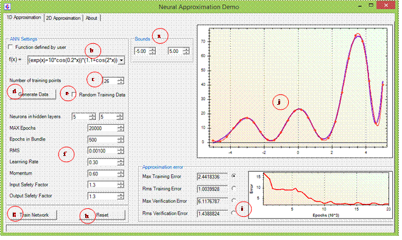
Figure 1: GUI
for approximation of functions of one variable.
a.
Bouds of the sampled interval
b.
Function that is sampled
c.
Number of training points for ANN
d.
Button to generate training data
e.
Option for random sampling (unchecked means equidistant)
f.
ANN settings
g.
Start training
h.
Reset all to default
i.
Error type with convergence graph
j.
Main graph showing the original (sampled) function, training
points and approximation
While approximation of functions of a single variable is the least interesting problem in ANN-based modeling, playing with such approximations is instructive because very clear graphic representations of results can be made.
Exploring 1D ANN-based approximations in NeurApp is intuitive and can be learned in a minute. Clicking on the “1D Approximation” tab on the top of the application’s form activates the user interface for 1D approximations. To see how it works, click first on the “Generate data” button and then on the “Start” button, and that’s it.
Clicking on the “Generate data” button samples the function that you want to approximate and is specified next to the “f(x) = ” label, in order to generate function values used to train the neural network. After the training data is generated, it is immediately shown on the graph on the right-hand side (together with the approximated function on the interval where values are sampled), and the “Start” button gets active. Pressing the start button trains the neural network on the data that has been generated.
During the training procedure, the neural network tries to produce an intrinsic function that fits well the training data, without knowing anything about the original function used to generate that data. After training is done, the graph on the top right of the form shows the approximation generated by the neural network, the training data used to generate this approximation, and the original function used to generated the data. In this way you can visualize how much the approximated function deviates from the original one.
You can vary the number of sampled function values in the training data, change interval on which training data is generated, modify the approximation function itself, and change neural network architecture and training parameters and observe how any of these circumstances affect the accuracy of the approximation (i.e., how closely the approximation fits the original function). In further subsections it is explained how to adjust specific things that influence the approximation.
When starting the application, there is already a pre-set default function to be approximated. You can change the approximated function by using the input field next to the “f(x) =” label, and this can be done in two ways. If the checkbox “Function defined by user” is unchecked, you can choose one of the pre-defined functions from the drop-down list that opens when clicking on the triangular arrow positioned on the right-hand side of the text field.
In order to define at own will an arbitrary function to be approximated, check the “Function defined by user” checkbox. When the checkbox is checked, you can insert expressions defining an arbitrary function in a standard symbolic way by using “x” for independent variables, standard operators such as +, -, * (multiplication), / (division), a number of standard mathematical functions, and parentheses for grouping expressions and overriding operator precedence in order to define order of evaluation. There is no operator for powers, and you must used the function “pow”, e.g. the expression “pow(x,3/2)” means the independent variable x raised to the power of 3/2 (which is equivalent to calculating square root of x and raising the obtained value to the third power).
Warning: You can not insert your own function definition when the “Function defined by user” checkbox is not checked. The text field for inserting functions is green when user defined functions are allowed. If you insert an invalid expression that defines the approximated function (e.g. forget a bracket or use a mathematical function that is not defined, the text field will turn orange when you attempt to generate the data.
In the “Bounds” box, you can define the interval on which the approximated function is sampled in order to generate the training data. Number of function values to be generated and used in training is defined next to “Number of training samples”. If the “Random training data” is checked then function will be evaluated in randomly chosen points. Otherwise, it is sampled in equidistant points on the selected interval.
Generation of function values used for training (sampling) is triggered by clicking on the “Generate Data” button. Sampled function values are shown as points on the graph where the original function is shown, too.
The ANN-based approximation of the original function is calculated by training the neural network on the sampled values generated before. In this procedure, the internal state of the neural network is continuously updated in such a way that the discrepancy between the training data and the outputs generated by the network are minimized. Training (generation of the approximation) begins by pressing the “Start” button and finishes either when the prescribed accuracy is reached or when the maximal prescribed training time (measured in epochs, i.e. in iterations of the training algorithm) elapses.
The user can define the required accuracy by setting a tolerance (a small positive number) on the RMS (root mean square) error, which is inserted next to the “RMS” label. The training procedure will stop when the error measure drops below the user defined tolerance. In order to prevent infinite looping when the tolerance can not be achieved, the maximal number of epochs can be set next to the ”Max. Epochs” label. If the training algorithm performs that number of epochs, it will stop even if the required accuracy is not reached. The box next to “Epochs in bundle” just defines granularity of convergence checks, which are not performed after every epoch (iteration) of the training procedure, but only after each specified number of iterations defined by this parameter. This has no significant effect on results in most cases, but speed ups computation by a small factor.
Network architecture can be defined next to the “Neurons in hidden layers” label. Networks with one or two layers of hidden neurons can be used, and the number of neurons in each hidden layer can be independently defined in the corresponding field. The second number can be 0 meaning that a neural network with a single hidden layer is be used. In general, more neurons in hidden layers means more connections between neurons, thus more free parameters (weights) to be adjusted and better fitting capabilities of the network (but also increased probability for overfitting and longer computation times). Therefore, approximation of more complex functions (e.g. with wild oscillations or sharp transitions) requires more neurons to achieve comparable accuracy as with simple functions, provided of course that the number of training data is also appropriately larger. In a two layer network, each neuron of the first hidden layer is connected to each neuron in the second layer, meaning that the number of connection increases quadratically with simultaneously increasing number of neurons in both layers.
Two parameters of the training procedure, namely the learning rate and the momentum, can be adjusted in the corresponding text fields. These parameters can be both set to positive values lesser than 1. Increasing the learning rate means that the weights and biases are more quickly adjusted in the opposite direction of the error gradient in order to decrease the error, which means faster decrease of errors at the beginning, but can cause more numerical instability. Momentum adds inertia to the training procedure, and simply adds a fraction of the previous weight update to the current one calculated by error back propagation.
In neural networks used, output signals of neurons are transformed by a sigmoid activation function that has a range between 0 and 1. In order to approximate different ranges of values, output of the neural network are scaled by an affine function that maps the [-1, 1] interval to some other interval, say [a, b]. Only values within that interval are attainable by the neural network approximation. The question that arises is how to appropriately choose the interval. An obvious strategy would be to choose a very large interval, large enough to include any value that could be possibly expected to be generated by the approximated function on the interval of interest. However, making this interval too large can reduce the approximation capabilities of the neural network due to wasting large portions of the output interval that would never contain realistic values. The interval attainable by the outputs (and thus the mapping function) should therefore be set such that there is some space beyond the values ever expected to be attained by the original (approximated) function, yet not too big.
It is obvious that the interval should at least contain all the values generated by sampling, i.e. all function values contained in the training data. However, since it is likely that some function values on the sampled interval exceed the interval that contains all sampled values, some extension of the interval should be provided beyond that, and this is what we call the safety factor. User can vary the output safety factor from 1 upwards by inserting the factor into the text field next to the “Output Safety Factor” label.
As far as inputs are concerned, any input from minus to plus infinity can be fed to the neural network to produce the appropriate output. Inputs are transformed by the sigmoid function before they are sent to the neurons in the next layer. However, since the slope of the transforming function approaches zero far from 0, it is numerically desirable that most of the inputs that will be fed to the network fall on the interval [-1, 1]. Input values are therefore also scaled in a similar way as outputs, and the mapping function is specified in such a way that all inputs from the training data are mapped close to the interval [-1, 1] before they are fed to the neural network. The input safety factor defines how much smaller from the reference [-1, 1] interval is the interval to which all inputs from the training data fall when scaled before being fed to the network.
When the training procedure is completed (after clicking the “Generate Data” and then the “Start” buttons), results are shown automatically. The original function, its neural network approximation calculated by the training procedure, and the training data on basis of which the model is calculated are plotted on the graph located on the top-right portion of the form.
On the graph below, inside the “Approximation error” box, the course of different error measures during the training procedure can be shown, plotted against the number of epochs. By clicking on the appropriate radio button you can choose which error measure is shown on the graph, while final values for all error measures are written in the appropriate boxes.
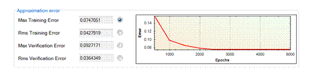
Figure 2:
Convergence of different types of errors.
Max
Training Error
Maximum absolute error calculated on complete training data set after each set of epochs (Epochs in Bundle) and shown on graph
Rms
Training Error
Root mean square error calculated on complete training data set after each set of epochs (Epochs in Bundle) and shown on graph
Max
Verification Error
Maximum absolute error calculated on complete verification data set after each set of epochs (Epochs in Bundle) and shown on graph. Verification data are not used in training procedure, but are separated from training data and used just for verification the accuracy of ANN during and after training.
Rms
Verification Error
Root mean square error calculated on complete verification data set after each set of epochs (Epochs in Bundle) and shown on graph.
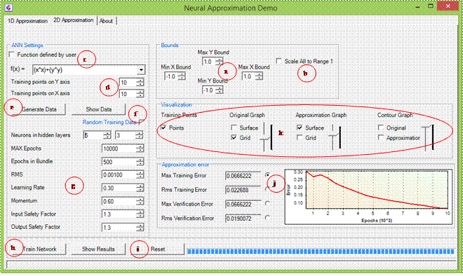
Figure 3: GUI for approximation of functions of
two variables.
a.
Bounds of the graph
b.
Option for scaling to range (0,1) in all directons
c.
Definition of approximated (sampled) functtion
d.
Number of training points for ANN in both directions
e.
Button to generate training data
f.
Option for random sampling
g.
ANN settings
h.
Start training
i.
Reset all to default
j.
Error type
k.
What to show on graph, with sliders for opacity
Exploring 2D approximations is just as simple as exploring 2D approximations. You can start without any special knowledge, just click on the “2D Approximation” tab in order to display the appropriate panel (Figure 3), and then the “Generate Data” and then the “Start” button. Before clicking on the “Start” button, you should wait until the graphic window showing the approximated function and sampled data is displayed, and close the window. Graphs are shown in a separate windows in order to allow better quality and interaction with 3D graphs.
When the training procedure completes, the graph showing the result is open immediately in a new window. You can interact with the graph (rotate it, zoom in or out, and translate it) in order to view interesting details from the best perspective, and you should close the graph before performing other actions.
The function to
be approximated is defined similarly as for 1D approximation (see Section 2.2.1). In the case of user defined function, the
expression defining the function can contain two independent variables, denoted
by x and y, respectively. Since there are two variables, four
interval bounds must be defined in the “Bouds” box. These define minimal
and maximal values of independent variables x
and y in generated sampling points.
Besides, there is a checkbox saying "Scale
All to Range 1". If this is checked then graphs will be scaled such that
all edges of the graph along co-ordinate axes will have the same lengths. This
is useful when ranges of data values along co-ordinate axes have huge
differences in scale and hraphs in real proportions would seem excessively
elongated in cerain directions.
Everything is rather similar than in 1D approximation, and some differences are outlined below. Also the number of sampled values is defined by two values instead of one. If you clear the “Random Training Data” checkbox then values are sampled on a regular grid of points, where the text field beside “Samples on X axis” defines number of points on the grid in x direction, and “Samples on Y axis” defines number of points on the grid in the perpendicular (y) direction. If the “Random Training Data” checkbox is checked then sampling points are generated randomly (with uniform distribution) and the two directions are not distinguished what concerns the generated points. The total number of the generated sampling points equals to the product of both numbers, but their order is interchangeable.
Things related to the network architecture and parameters of the training algorithm are defined in the same way as in the case of 1D approximation (see Section 2.2.2).
Just take into account that in general, in the case of two independent variables, more degrees of freedom are needed for the same quality of approximation as in 1D. This means that the number of neurons in each hidden layer should usually be higher than in the 1D case, but consequently also the number of sampling points should be higher. To be precise, this is a bit simplified and overly generalized statement since the optimal number of neurons varies from case to case and depends primarily on the complexity of the function to be approximated. However, on average over a large range of functions, the statement is valid.
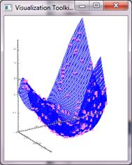
Figure 4: Results of a 2 parametric approximation
are shown as 3D graph. Right-hand side: window that shows the original function
sand training data. 3D graphics is rendered by the VTK graphical engine.
Training data and the approximated function are shown, after clicking on the “Generate data”, in a separate interactive 3D window. In a similar way, the resulting approximation is shown, together with the approximated function and training data, after clicking the “Start” button (Figure 4). You user can interact with 3D graphs by mouse and keyboard in order to adjust the viewing angles, position and zoom as desired. Close the window after viewing is done, since failing to do so may result in undesirable effects, depending on the operating system.
You can interact with the graphs by using mouse and keyboards. Click on the window in order to make it active and interact with it. The relevant commands are listed below:
· r – resets the viewpoint along the viewing direction such that all graphic objects are within the viewing areal. This centers and zooms the view appropriately. If the graphics window opens and nothing is visible, press the r key because objects may just be out of scope.
· j / t – toggles between joystick or trackball mode. In joystick mode, motion occurs continuously as long as mouse button is pressed. In trackball mode, motion occurs only during dragging (when the mouse button is pressed and the mouse cursor moves). The trackball mode is more suitable for finely adjusting the view.
· left mouse button – rotates the camera (in the camera mode, switched on by pressing the c key) or graphic objects (in the actor mode, switched on by pressing a). The camera is rotated around the focal point (which can be repositioned by pressing the f key over a graphic primitive). In trackball mode, you must press the button and move the mouse cursor, while in joystick mode pressing the button is enough (switch between the two modes by pressing the t or the j key).
· Ctrl + left mouse button – rotates the camera (in camera mode, switched on by presing the c key) or graphic objects (or actors, switched on by pressing the a keys) around the axis perpendicular to the projection plane.
· Shift + left mouse button – pans the camera (moves it parallel to the projection plane) in camera mode or translates the graphic objects (actors) in actor mode. Does the same as the middle mouse button.
· middle mouse button – pans the camera (moves it parallel to the projection plane) in camera mode (switched on by pressing the c key) or translates the graphic objects (actors) in actor mode (the a key). In joystick mode, translation is from the center of viewport toward the mouse cursor position (toggled by pressing j for joystick and t for trackball mode). Camera mode is switched on by pressing the c key and actor mode by pressing the a key.
· right mouse button – zooms the camera (in camera mode, switched on by pressing the c key) or the graphic objects (actors). In joystick mode (switched on by pressing the j key) the direction of zoom depends on whether the mouse cursor is located in the top half of the window or viewport (zooms in) or in the lower half (zooms out) while the zoom speed depends on the distance from the horizontal centerline.
· mouse wheel – zooms in or out, dependent on the direction of rotation.
·
f – flies to the point under the mouse cursor, and sets the
focal point on it (rotations then occur around that point). This command works
only when the mouse cursor is located closely enough over a graphic primitive
(auxiliary objects such as axes do not count). It centers the graph around the
point under the mouse cursor. If later on the graph is translated, the point of
rotation still remains on the same point until the next ” fly to” operation is
performed.
· c / a – toggles between camera and actor modes. In camera mode, user interaction affects the camera position and focal point, while in actor mode it affects the object (“actor” in VTK terminology) under the mouse pointer. Therefore in actor mode one can rotate and translate different objects independently. This enables e.g. separation of different graphic objects. You can press a, then click on the graph of the original function with the middle mouse button and drag it away from other objects, then press c and center the view around the graphs of the approximation and sampled points in order to view them together, without the original function.
· p – pick operation. This shows a wire frame around the object under the mouse cursor. This may turn useful in rare occasions in order to see to which object the graphic primitive under the cursor belongs, e.g. when separating objects in actor mode.
· s / w – all objects become represented as surfaces / in wire frame. You will seldom need this command.
· e / q – exits / quits the graphic window.
User interaction capabilities can be used to precisely position the view in order to make interesting details appear more obvious, but also for achieving some special effect. Figure 5 demonstrates, for example, how actor mode (switched on by pressing the a key and switched off by pressing the c key to go back to camera mode) can be used to move the graph of the approximation apart from the graphs of the approximated function and sampled values used for training. This has been done in the following way. First the trackball mode was switched on by pressing t. Then the graph was rotated (left mouse button, with holding the Ctrl key for rotation in the projection plane), translated (Shift + left mouse button) and zoomed (right mouse button or mouse wheel) in order to achieve the appropriate view. Then, the actor mode was switched on by pressing the a key, and the approximation (the colored surface) was moved away from the original location to the right by pressing and holding the Shift key and pressing the left mouse button and moving the mouse to the right. Finally, the c key was pressed in order to get back to the camera mode and finely tune the whole graph by translation of the camera. Since objects were not zoomed while in the actor mode and since rotations were not performed since entering the actor mode, one can see the realistic ratios between the original function (blue wireframe) and its approximation (colored surface) and it is obvious that the approximation has lesser total span than the original.
In the camera mode (switched on by pressing the c key), all graphic objects stand still and the camera rotates and translates around. In the actor mode (switched on by pressing the a key), camera remains still and the selected graphic object (which may consist of many graphic primitives, such as the whole surface in the above described case) moves and rotates (thus it can also change position with respect to other objects).
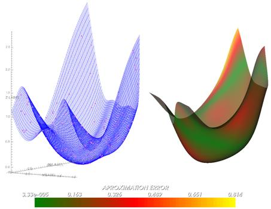
Figure 5: Separation of the graph of the original
function and sampling points (left-hand side) and approximation (right-hand
side) by using the actor mode. Case is the same as shown in Figure 4.
This is equivalent as in 1D case (Section 2.2.4). Final values of different error measures are shown in the “Approximation error” box and course of the selected error measure is shown on the graph on the right of error values. Radio buttons are used to select the error measure to be shown on the graph ().
Figure 6:
Convergence of different types of errors.
Max
Training Error
Maximum absolute error calculated on complete training data set after each set of epochs (Epochs in Bundle) and shown on graph
Rms
Training Error
Root mean square error calculated on complete training data set after each set of epochs (Epochs in Bundle) and shown on graph
Max
Verification Error
Maximum absolute error calculated on complete verification data set after each set of epochs (Epochs in Bundle) and shown on graph. Verification data are not used in training procedure, but are separated from training data and used just for verification the accuracy of ANN during and after training.
Rms
Verification Error
Root mean square error calculated on complete verification data set after each set of epochs (Epochs in Bundle) and shown on graph.
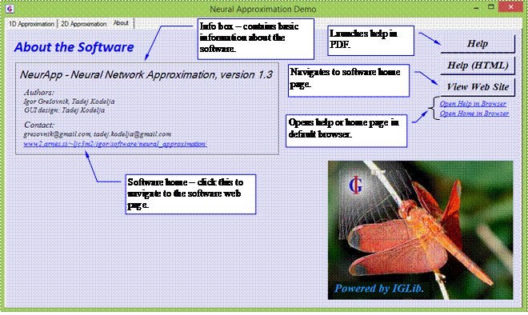
Figure 7:
Accessing help and other information.
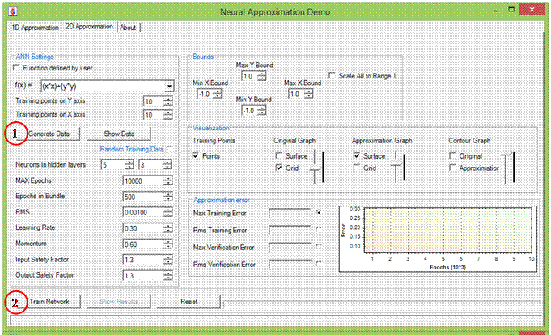
Figure 8: NeurApp has an intuitive user interface. All you need to
remember is to press the “Generate Data” and then the “Train Network” button,
which is the same for functions of one and two variables. Other controls are
for changing parameters of the training procedure, bounds of training data, and
the function to be approximated.
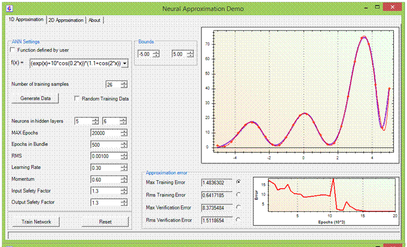
Figure 9: After pressing the “Train Network” button, training
of the neural network begins, and the result is shown immediately after
training is complete (the same applies to functions of two variables). It is
easy to compare the generated ANN model with the original function. Smaller
graph shows how error was reduced during the training procedure, making
possible to correct some parameters such as tolerances and maximal number of
epochs if results are not as expected.
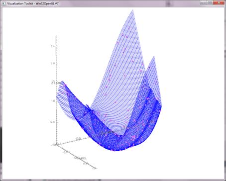
Figure 10: Example 3D plot of the original function of 2
variables and the generated training data on the surface of the function graph.
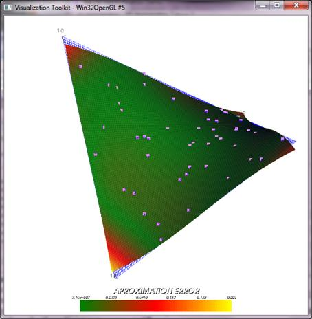
Figure 11: After training of the neural network is complete, a
surface plot of the approximated function is shown together with the original
function and with the generated training data. Error magnitude is shown in
color scale.
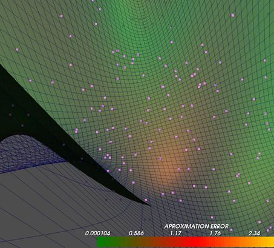
Figure 12: One can interactively adjust the viewing angle and
zoom in order to inspect properties of the approximation in detail.
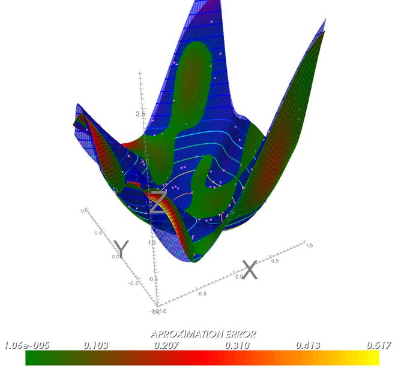
Figure 13: Finally, there are a number of display options that
make inspection of the approximation and its errors really easy and clear. One
can individually switch on or off display of training points, grid, surfaces
and contours of the original function and its approximation. Transparency of
both surfaces can be continuously adjusted. In this figure, both original and
approximated surface were drawn relatively opaque, therefore it is immediately
clear where approximated function has higher or lower values than the original
one. Contours of the original function are displayed, which gives better
feeling of 3D shapes.
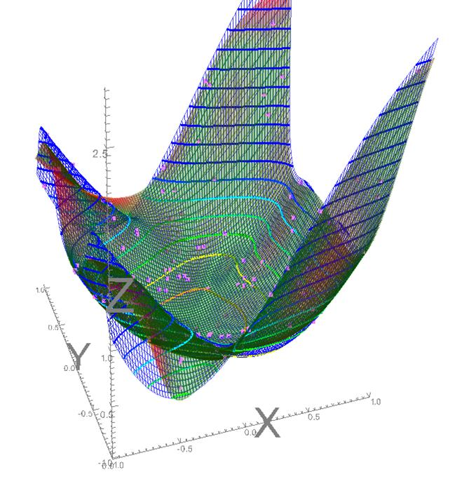
Figure 14: This
shows the same approximation as the previous image, but surface of the
approximation function is more transparent and surface of the original function
is not shown. This makes comparison of grids easies, color indication of regions with
greater or smaller errors is still visible, and contours and grids are not
obscured.
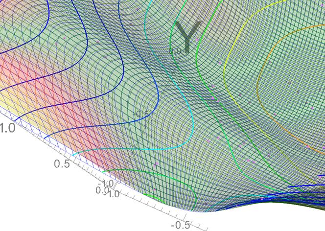
Figure 15: Zoomed
detail with the same settings as in the previous figure.
Software was developed by Igor Grešovnik and Tadej Kodelja as an easy to use and intuitive tool for exploring features of approximation by the artificial neural networks (ANN). Authors have developed the software while working on ANN-based model of process parameters in material production in the Centre of Excellence for Biosensors, Instrumentation and Process Control (COBIK). In the scope of his work at COBIK, Tadej Kodelja was also working on his Ph.D. thesis under supervision of Prof. Božidar Šarler and Igor Grešovnik.
The software is based on the Investigative Generic Library (IGLib), a framework library for development of technical applications. The library itself is based on the .NET framework and relies on a number of third party libraries. It has been used by several commercial software projects as well as in research projects. Among the others, it serves as code base for the software for industrial ANN-based modeling, which is developed by the authors of NeurApp. This is a complex software used as support to tackle most challenging ANN modeling problems in industry. It requires some expertise and skills to use that software, but with the benefit of a powerful and flexible problem solving tool. The software is used internally for performing research and providing services to industry, but authors are open for all kinds of collaboration where the software can be utilized.
Motivation for development of the software came partially from authors’ personal needs, since authors wanted to gain better insight in features and function of the ANN-based approximations, gained from practical experience and on fast and intuitive way. Therefore they devised a software where one can conceive arbitrary functions of one and two variables, input these functions through a graphical user interface and set them as the reference functions for ANN-based models, sample function values on a regular grid or in randomly distributed values, train the neural network to obtain an approximate model, and inspect properties of the obtained model by observing various statistics and by visual comparison of the model and the original reference function. In this way, it is easy to develop an intuitive feeling for the capabilities and limitations of the ANN-based modeling.
Additional motivation was in creating a tool that could be easily utilized to demonstrate some features of the artificial neural networks to our colleagues. Often people have wrong expectations about the ANN-based modeling. Many times they heavily overestimate the capabilities of the neural network modeling, considering this tool as a kind of Panacea, an almighty remedy for all problems. It is sometimes difficult to explain that ANNs are just an ordinary (though very strong in some aspects) utility for black box modeling. As such, it crucially depends on the availability and quality of data, thus being susceptible to many kinds of data deficiency and absolutely adherent to the “garbage in, garbage out” principle. By a tool such as NeurApp, it is easier to plastically demonstrate how ANN-based modeling works.
Below there is a collection of selected references and links that are in some way related to the NeurApp software. They are mainly related to the authors’ past work that brought to the situation where NeurApp was created. References [1] - [3] are some papers published within the scope of our work at the . [4] - [9] are references related to optimization shell Inverse, which is a complex industrial & research optimization software written in C that preceded the IGLib library, and where many concepts and ideas used in the IGLib library (a framework library for development of technical applications reference developed by Igor Grešovnik, reference [10]) come from. Aforge.Net (reference [11]) is a library that is used as neural networks computation engine in NeurApp.
References [12] and [13] are links to the institution Centre of Excellence for biosensors, instrumentation and process control (COBIK) and the laboratory where the authors currently work. Within COBIK, authors are developing methodologies for application of artificial neural networks to modeling of industrial processes. The problem solving software developed in the scope of this work is based on the IGLib ([10]). This is also the case with NeurApp, which is just a side product of the above work initially developed as a simple tool for authors’ training in basic features of ANN-based approximation.
The more professional software used for actual research & industrial work is quite complex and requires a high level of expertise from the user, and it is interpreter - centered rather than a GUI - based. It is used internally for performing research tasks and to offer services to industry, with interfaces to a number of partner software and with some specialized interfaces for users in partner institutions. This software is designed to be highly flexible and quickly adaptable to new problems and customer requirements. It does not targeted any specific range of tasks, but is a good base for a wide range of specialized modules or applications for specific and well defined tasks. The software is not available for purchase, but authors will welcome any suggestion for collaboration on research, development or industrial projects or request for development of software needed, where they can provide reliable and professional service.
[1] Grešovnik,
[2] Grešovnik,
[3] Grešovnik,
[4] Gresovnik, I. (2000): A General Purpose Computational Shell for Solving Inverse and Optimisation Problems - Applications to Metal Forming Processes, Ph. D. thesis, University of Wales Swansea, U.K.
[5] Grešovnik,
[6] Grešovnik,
[7] Grešovnik,
[8] Grešovnik,
[9] Grešovnik,
[10] Grešovnik,
[11] Aforge.Net. (2012): Artificial
intelligence library. Available at: http://www.aforgenet.com/.
[12] Centre of Excellence for
biosensors, instrumentation and process control (COBIK) http://www.cobik.si/index?lang=eng.
[13] Laboratory for Advanced Materials Systems, COBIK: http://www.cobik.si/laboratoriji/laboratorij-za-sisteme-z-naprednimi-materiali?lang=eng